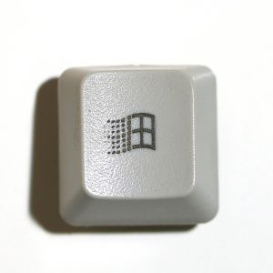

I made this for myself, but decided that other people might enjoy it as well. So, here it is
*Windows 95/98 style keycap start button
Original Image:

| Attachments: |
 button_sample.png [ 17.61 KiB | Viewed 2249 times ] |
File comment: This file is ready to be used as a start button! buttons.png [ 5.75 KiB | Viewed 2249 times ] |